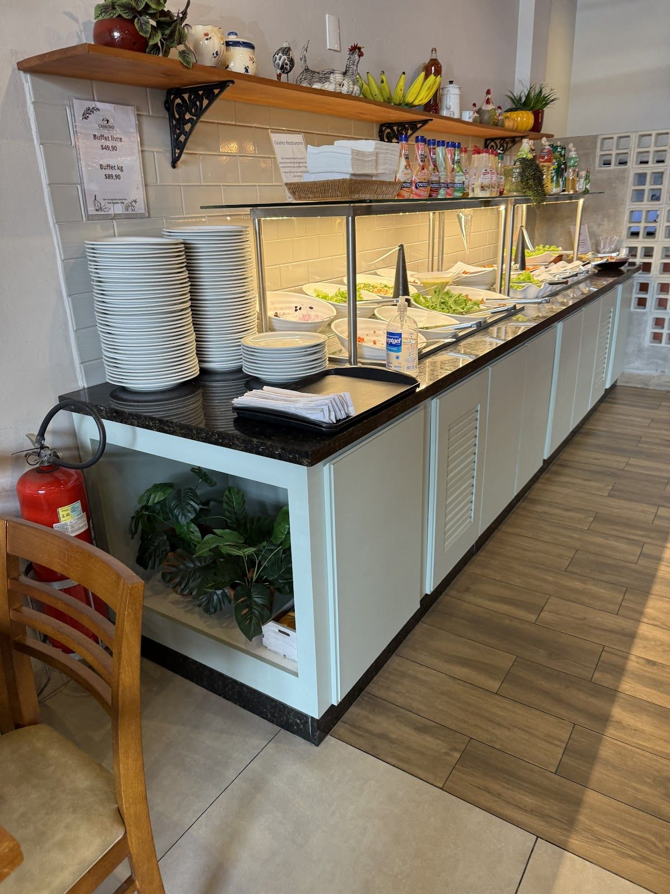
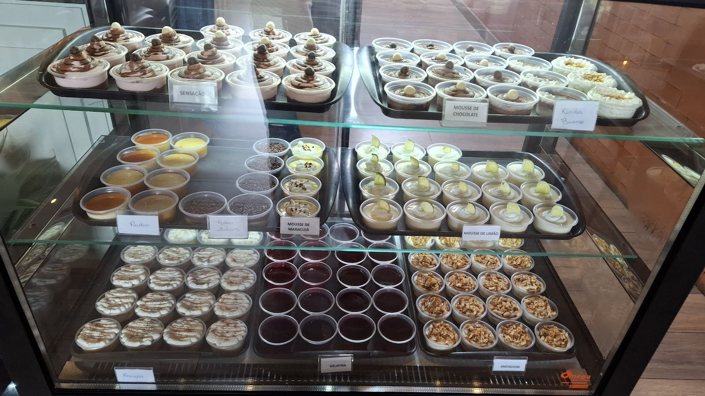
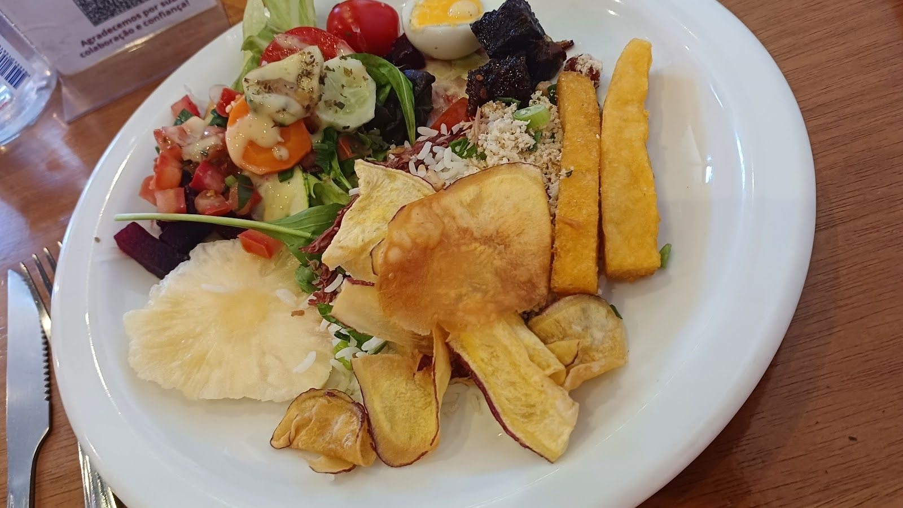
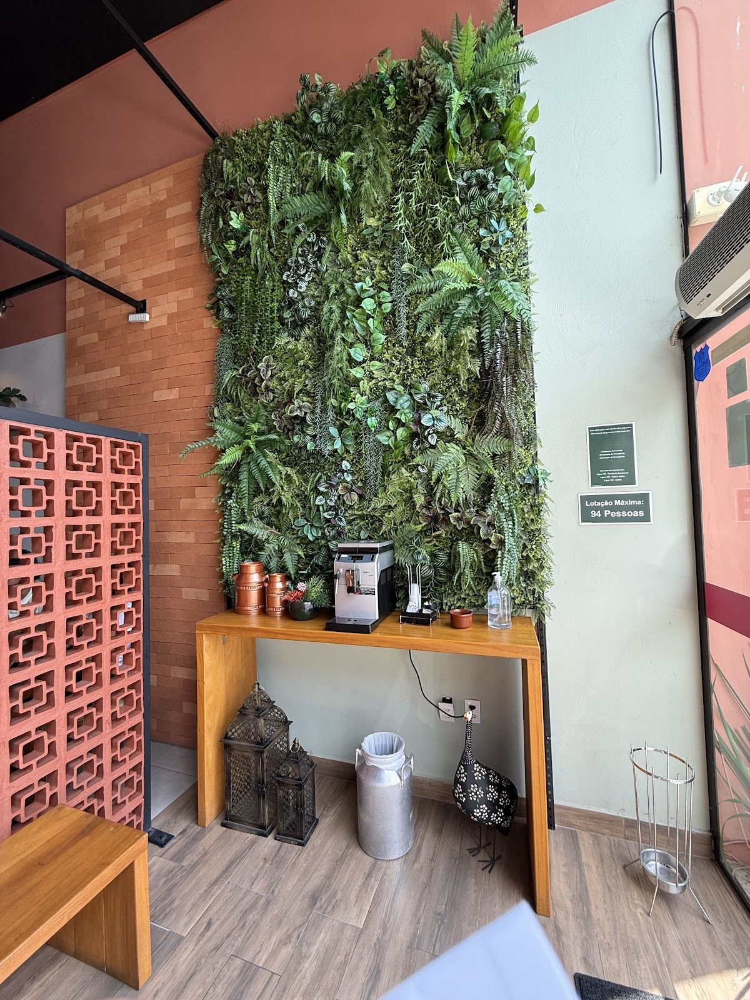
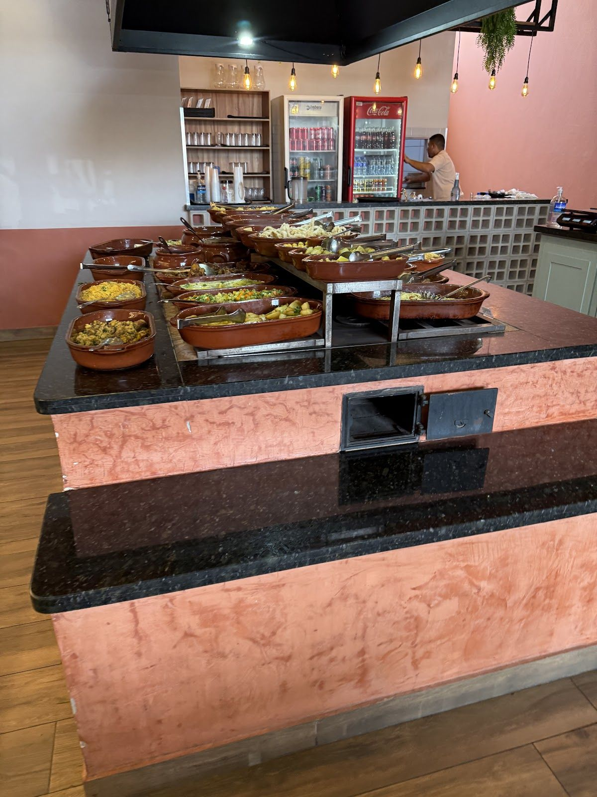
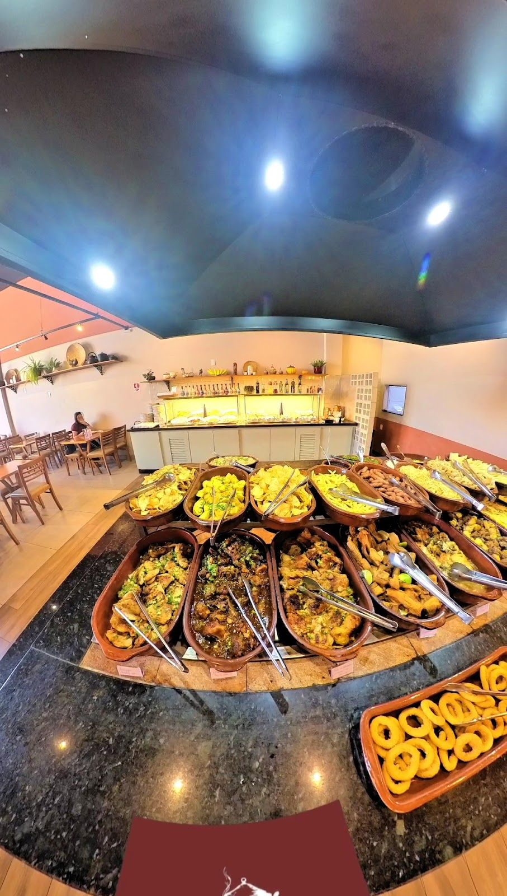
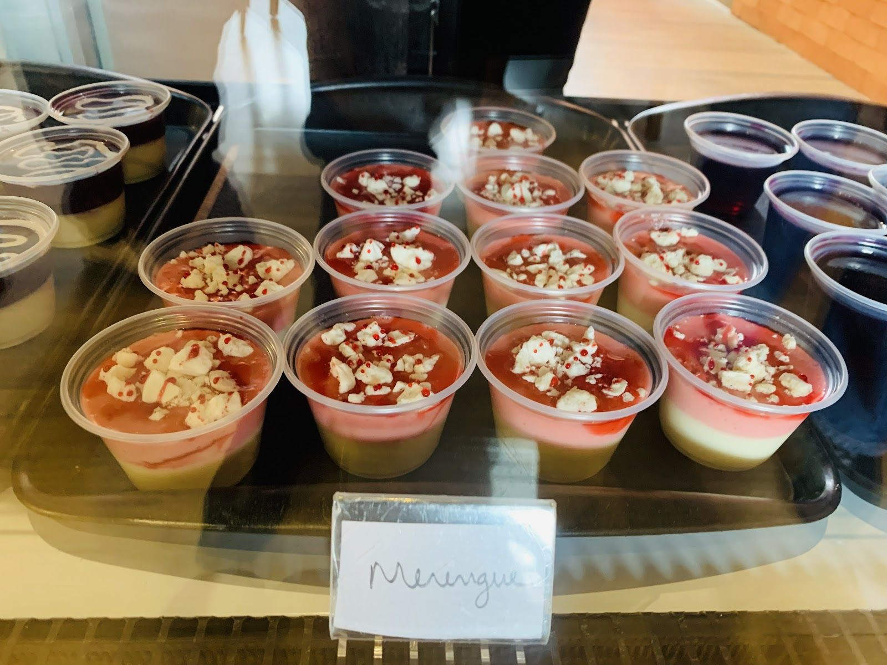
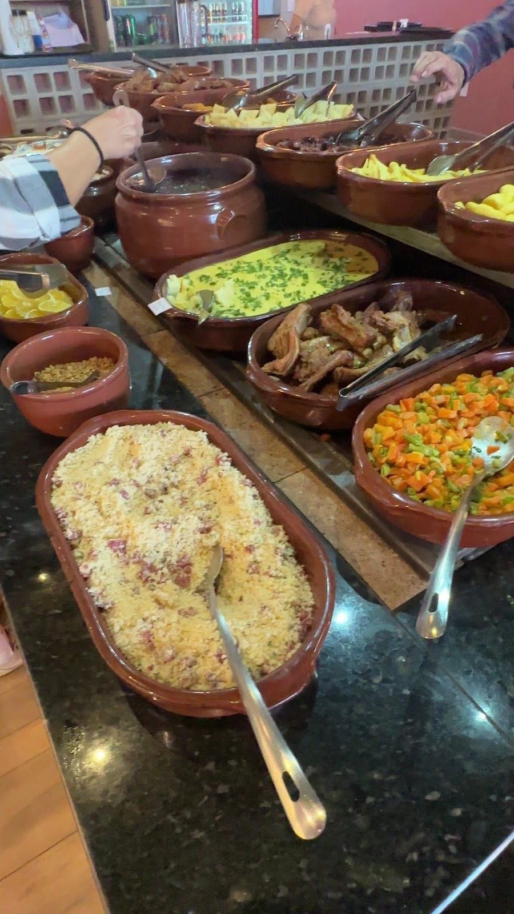
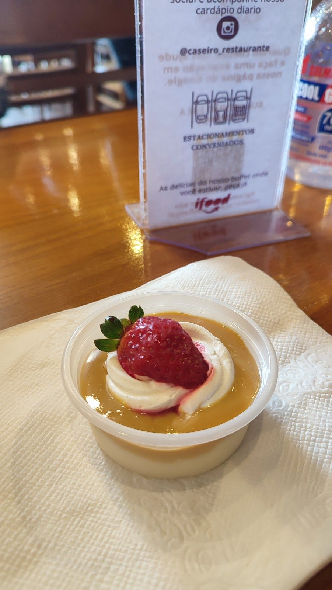
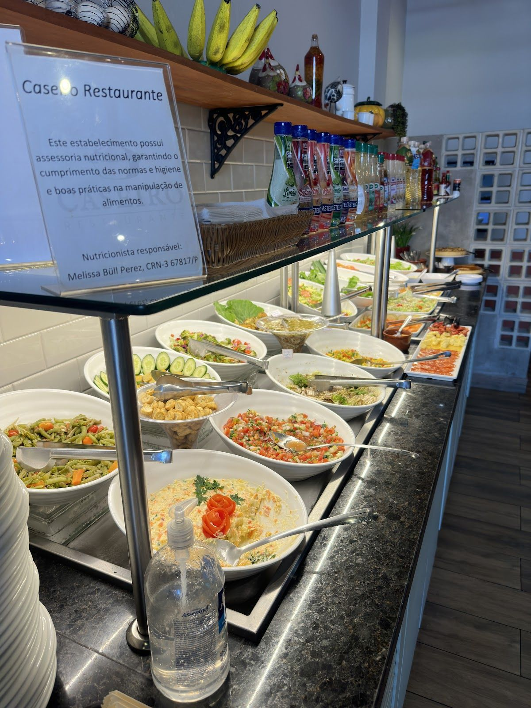

Buffet livre ou por kg, no Centro de Indaiatuba. Saladas fresquinhas, carnes no fogão a lenha e aquele tempero de comida feita em casa.
Uma amostra do que você encontra todos os dias no buffet do Caseiro.
Fotos meramente ilustrativas. O cardápio pode variar conforme o dia.
Fotos reais do salão e do buffet, tiradas no restaurante.









O Caseiro Restaurante tem comida brasileira, com gostinho de feita em casa — com direito a buffet no fogão a lenha.
No Centro de Indaiatuba, o Caseiro serve buffet livre e por quilo todos os dias, com saladas fresquinhas, carnes assadas e aquele tempero de comida caseira — o tipo de refeição que você pede pra repetir.
Sem reserva pra grupos pequenos — é só chegar.
Buffet livre ou por peso, você decide na hora.
Pix, cartão ou dinheiro — sem enrolação.
Se não encontrar a resposta, chama a gente no WhatsApp.
Os dois! Você escolhe: buffet livre (valor fixo) ou por quilo, como preferir.
Para grupos grandes recomendamos avisar antes pelo WhatsApp. Pra 1 a 4 pessoas geralmente não precisa.
Sim, o buffet sempre tem saladas, legumes e guarnições sem carne.
Não, o Caseiro funciona de segunda a sábado, das 11h às 14h30.
Buffet livre ou por kg, todo dia da semana (menos domingo). Chama a gente no WhatsApp se ficou com alguma dúvida.
Ver cardápio